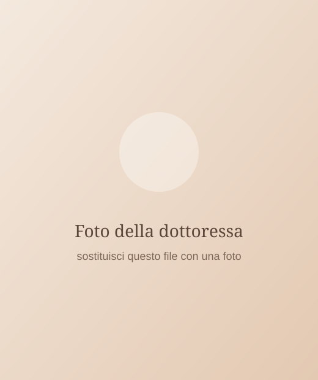
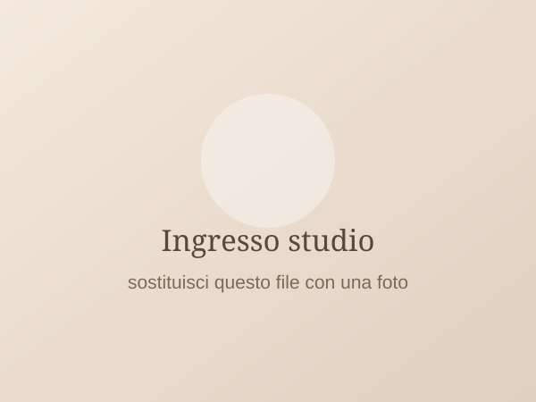
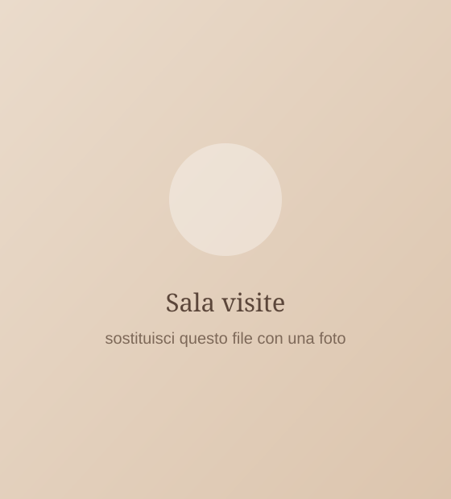
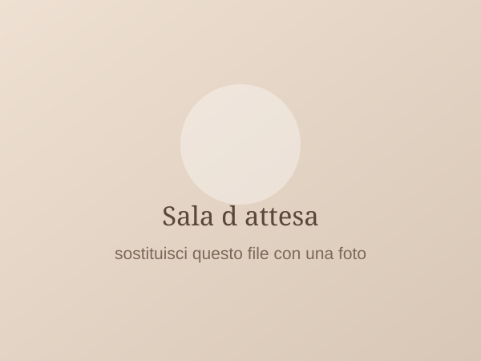

Dermatologia e Venereologia — Verbania
Visite dermatologiche e controllo dei nei, su appuntamento.
La Dott.ssa Roberta Zanetta riceve nel suo studio di Verbania, in Piazza Castello. Ogni visita ha il tempo che serve.
Stesso numero per prenotazioni e informazioni.
- Su appuntamentovisite in studio, senza attesa
- Piazza Castellocentro di Verbania
- Dermatoscopiadigitale, per il controllo dei nei

Il medico
Chi ti visita
Specialista in Dermatologia e Venereologia, la Dott.ssa Roberta Zanetta riceve su appuntamento nel suo studio di Verbania, in Piazza Castello.
La visita comprende la valutazione della pelle, delle mucose, dei capelli e delle unghie. Per il controllo dei nei viene impiegato il dermatoscopio.
- Visite e controlli su appuntamento, in orari concordati
- Dermatoscopia digitale con archiviazione delle immagini
Prestazioni
Di cosa si occupa lo studio
Per informazioni su costi e modalità di pagamento chiama lo studio: te lo diciamo prima di fissare l’appuntamento, senza impegno.
Dove ti ricevo
Lo studio
Lo studio è in Piazza Castello 27, nel centro di Verbania. Le visite sono su appuntamento, così da ridurre l’attesa in sala.



Prima della visita
Domande frequenti
Cosa devo portare alla visita?
Un documento d’identità e la tessera sanitaria. Se hai referti di visite precedenti, esami istologici o fotografie di lesioni cambiate nel tempo, portali con te: aiutano il confronto. Se segui una terapia, porta l’elenco dei farmaci.
La visita è convenzionata con il Servizio Sanitario Nazionale?
Per informazioni su costi e modalità di pagamento chiama lo studio al 351 511 8880: te lo diciamo prima di fissare l’appuntamento, senza impegno.
Quanto dura la visita dermatologica?
Gli appuntamenti sono fissati a intervalli di quindici minuti. Per una mappatura completa dei nei, o per una visita che richiede più tempo, viene riservato più spazio in agenda: se pensi di averne bisogno, segnalalo quando chiami.
Prenotazioni
Dove siamo e come prenotare
Le visite sono su appuntamento. Chiama lo studio: è lo stesso numero per prenotazioni e informazioni.
Orari
| Lunedì | 9:00 – 18:00 |
|---|---|
| Martedì | 9:00 – 18:00 |
| Mercoledì | 9:00 – 18:00 |
| Giovedì | 9:00 – 18:00 |
| Venerdì | 9:00 – 18:00 |
| Sabato | chiuso |
| Domenica | chiuso |
Le visite si svolgono solo su appuntamento.